Soru 1Cevap: E
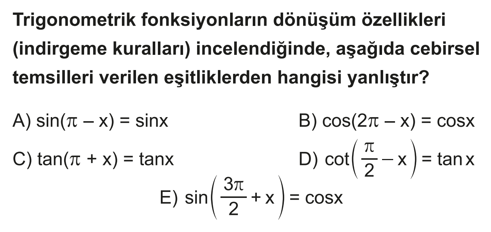
Çözüm
- $\sin\left(\frac{3\pi}{2}+x\right)$: $\frac{3\pi}{2}$ dikey eksende → isim değişir (sin → cos).
- $\frac{3\pi}{2}+x$ IV. bölgededir; orada sinüs negatiftir.
- $\sin\left(\frac{3\pi}{2}+x\right) = -\cos x$; E'deki eşitlik yanlıştır.
Cevap: E
Soru 2Cevap: E
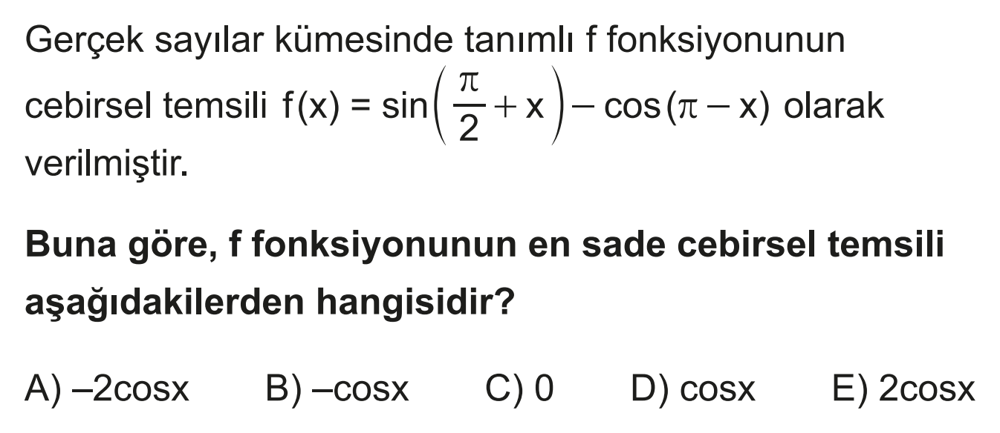
Çözüm
- $\sin\left(\frac{\pi}{2}+x\right) = \cos x$ (II. bölge, sinüs pozitif).
- $\cos(\pi - x) = -\cos x$ (II. bölge, kosinüs negatif).
- $f(x) = \cos x - (-\cos x) = 2\cos x$.
Cevap: E
Soru 3Cevap: B
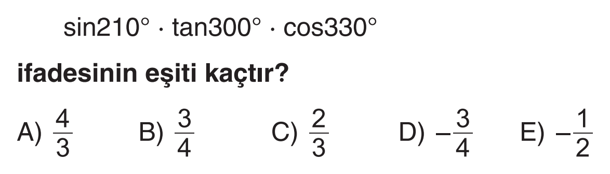
Çözüm
- $\sin210^\circ = -\frac12$, $\tan300^\circ = -\sqrt3$, $\cos330^\circ = \frac{\sqrt3}{2}$.
- $\left(-\frac12\right)(-\sqrt3)\left(\frac{\sqrt3}{2}\right)$
- $= \frac34$.
Cevap: B
Soru 4Cevap: D
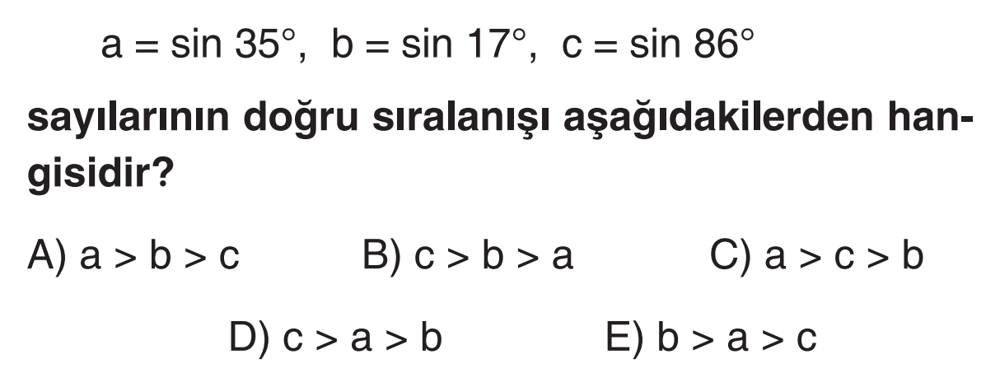
Çözüm
- I. bölgede açı büyüdükçe sinüs büyür.
- $17^\circ < 35^\circ < 86^\circ$
- $\sin86^\circ > \sin35^\circ > \sin17^\circ$ → $c > a > b$.
Cevap: D
Soru 5Cevap: B
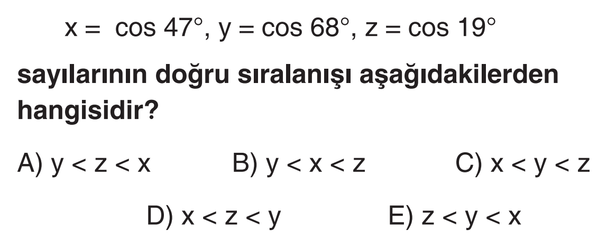
Çözüm
- I. bölgede açı büyüdükçe kosinüs küçülür.
- $19^\circ < 47^\circ < 68^\circ$ → $\cos19^\circ > \cos47^\circ > \cos68^\circ$.
- $z > x > y$, yani $y < x < z$.
Cevap: B
Soru 6Cevap: D
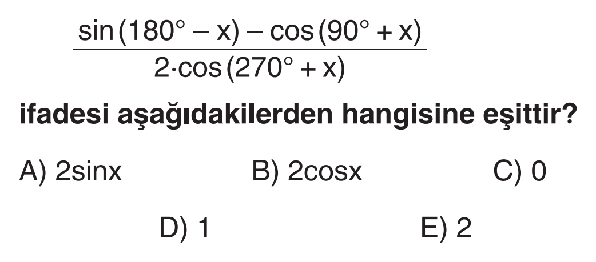
Çözüm
- $\sin(180^\circ - x) = \sin x$, $\cos(90^\circ + x) = -\sin x$ → pay $2\sin x$.
- $\cos(270^\circ + x) = \sin x$ → payda $2\sin x$.
- Oran $1$.
Cevap: D
Soru 7Cevap: C
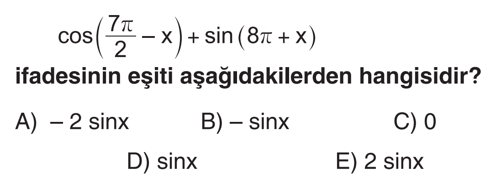
Çözüm
- $\frac{7\pi}{2} = 2\pi + \frac{3\pi}{2}$ → $\cos\left(\frac{7\pi}{2}-x\right) = \cos\left(\frac{3\pi}{2}-x\right) = -\sin x$.
- $\sin(8\pi + x) = \sin x$ ($8\pi$ tam turların katı).
- Toplam $-\sin x + \sin x = 0$.
Cevap: C
Soru 8Cevap: B
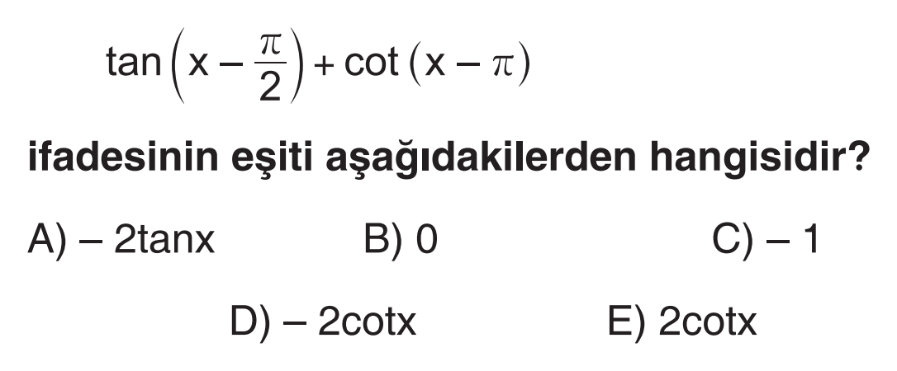
Çözüm
- $\tan\left(x - \frac{\pi}{2}\right) = -\tan\left(\frac{\pi}{2} - x\right) = -\cot x$.
- $\cot(x - \pi) = \cot x$ (cot'un periyodu $\pi$).
- Toplam $-\cot x + \cot x = 0$.
Cevap: B
Soru 9Cevap: E
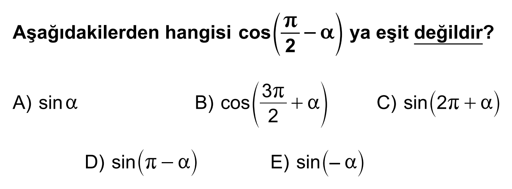
Çözüm
- $\cos\left(\frac{\pi}{2}-\alpha\right) = \sin\alpha$.
- $\cos\left(\frac{3\pi}{2}+\alpha\right) = \sin\alpha$, $\sin(2\pi+\alpha) = \sin\alpha$, $\sin(\pi-\alpha) = \sin\alpha$.
- $\sin(-\alpha) = -\sin\alpha$ olduğundan eşit olmayan E'dir.
Cevap: E
Soru 10Cevap: B
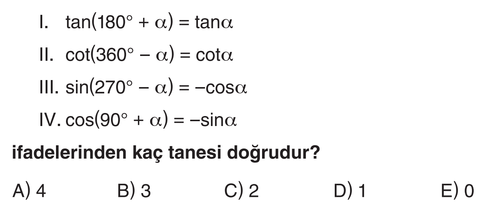
Çözüm
- I: $\tan(180^\circ + \alpha) = \tan\alpha$ ✓.
- II: $\cot(360^\circ - \alpha) = -\cot\alpha$ ✗. III: $\sin(270^\circ - \alpha) = -\cos\alpha$ ✓.
- IV: $\cos(90^\circ + \alpha) = -\sin\alpha$ ✓. Doğru olan 3 tane.
Cevap: B
Soru 11Cevap: B
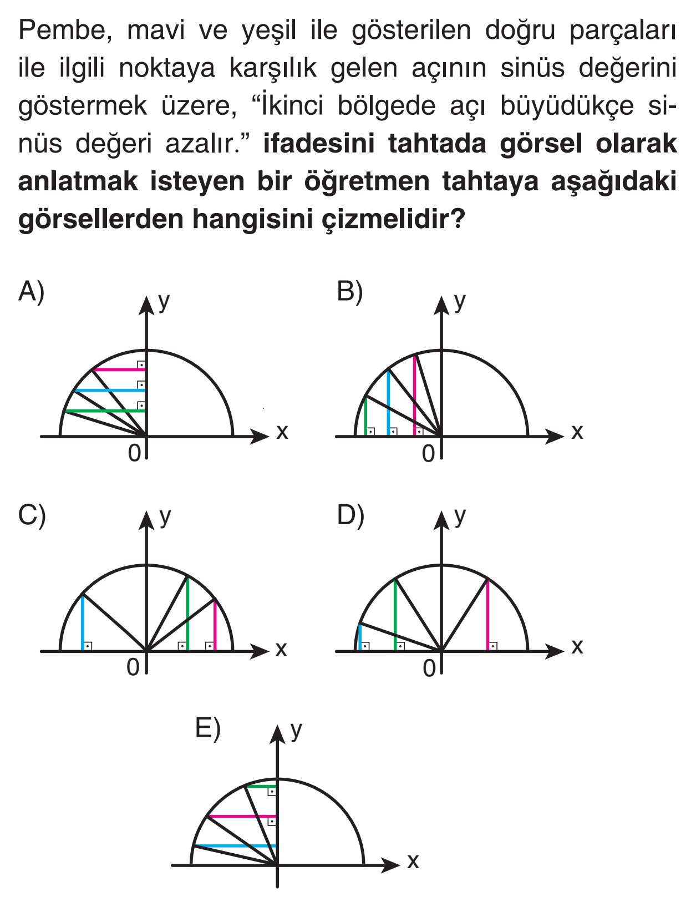
Çözüm
- Birim çemberde bir noktanın sinüsü, o noktanın x eksenine dik uzaklığıdır (dikey doğru parçası).
- İkinci bölgede açı büyüdükçe nokta $(-1,0)$'a yaklaşır, dikey parça kısalır.
- Sol yarıda x eksenine dik parçaları y ekseninden uzaklaştıkça kısalan görsel B'dir.
Cevap: B
Soru 12Cevap: A
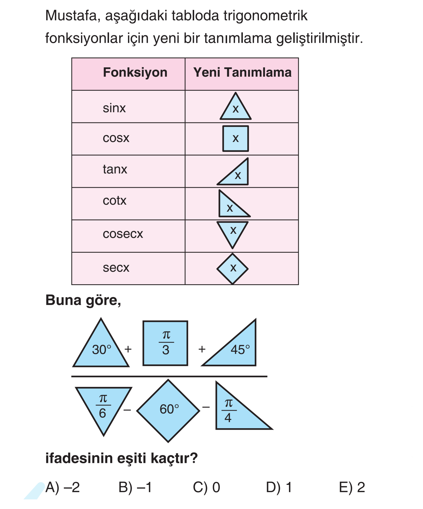
Çözüm
- Pay: $\sin30^\circ + \cos\frac{\pi}{3} + \tan45^\circ = \frac12 + \frac12 + 1 = 2$.
- Payda: $\csc\frac{\pi}{6} - \sec60^\circ - \cot\frac{\pi}{4} = 2 - 2 - 1 = -1$.
- Sonuç $\frac{2}{-1} = -2$.
Cevap: A
Soru 13Cevap: B
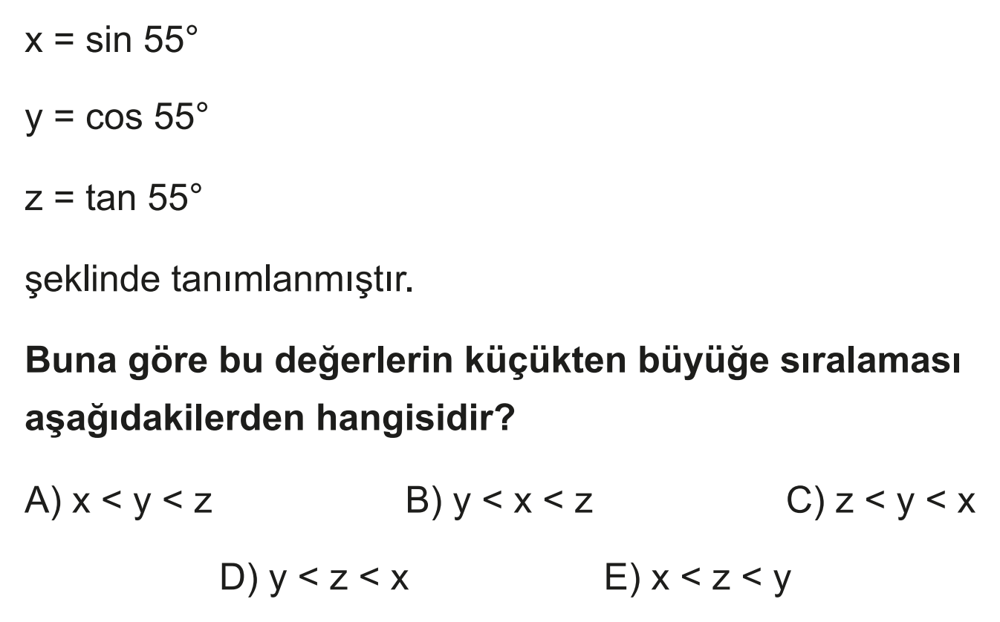
Çözüm
- $45^\circ < 55^\circ < 90^\circ$ aralığında $\sin > \cos$: $y < x$.
- $55^\circ > 45^\circ$ olduğundan $\tan55^\circ > 1$, $\sin55^\circ < 1$: $x < z$.
- Sıralama $y < x < z$.
Cevap: B
Soru 14Cevap: B
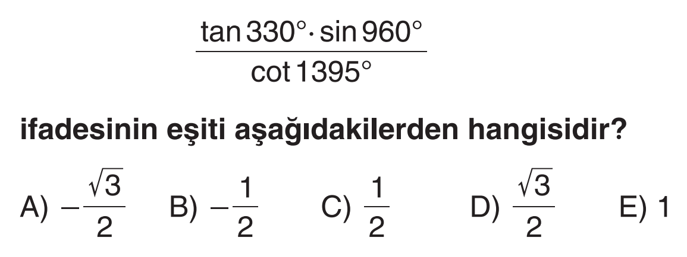
Çözüm
- $\tan330^\circ = -\frac{\sqrt3}{3}$; $960^\circ \to 240^\circ$: $\sin240^\circ = -\frac{\sqrt3}{2}$.
- $1395^\circ \to 315^\circ$: $\cot315^\circ = -1$.
- $\frac{\left(-\frac{\sqrt3}{3}\right)\left(-\frac{\sqrt3}{2}\right)}{-1} = \frac{\frac12}{-1} = -\frac12$.
Cevap: B
Soru 15Cevap: A
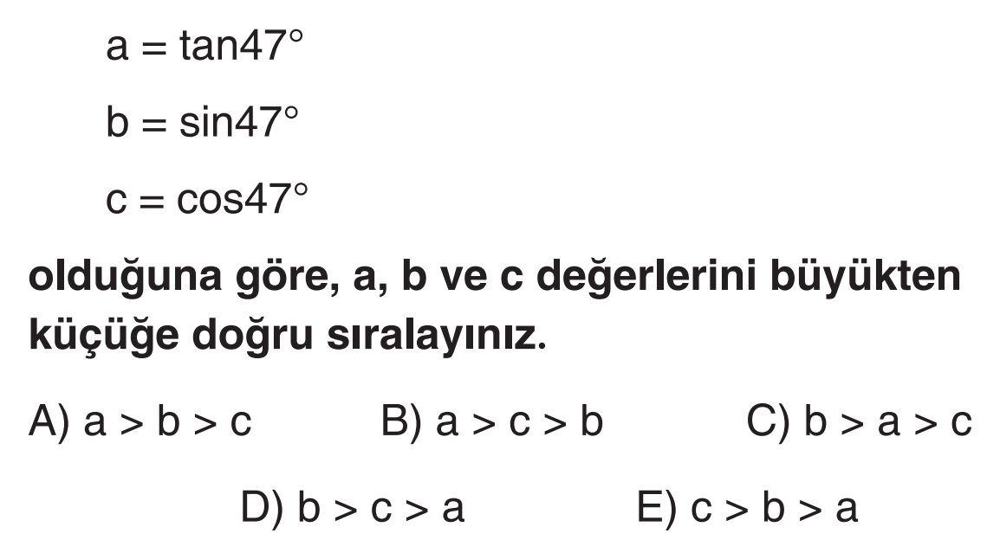
Çözüm
- $47^\circ > 45^\circ$ → $\tan47^\circ > 1$.
- $45^\circ < 47^\circ < 90^\circ$ → $\sin47^\circ > \cos47^\circ$.
- Sinüs ve kosinüs 1'den küçük: $a > b > c$.
Cevap: A
Soru 16Cevap: C
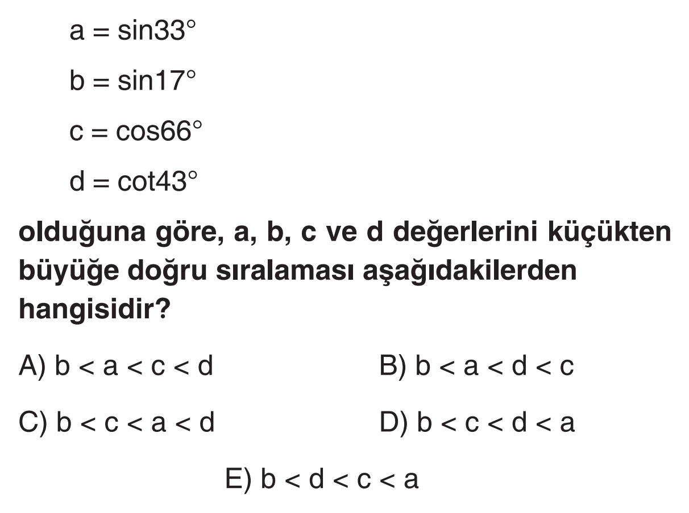
Çözüm
- $c = \cos66^\circ = \sin24^\circ$; $d = \cot43^\circ > \cot45^\circ = 1$.
- Sinüsler: $\sin17^\circ < \sin24^\circ < \sin33^\circ$ → $b < c < a$.
- Hepsi 1'den küçük, $d > 1$: $b < c < a < d$.
Cevap: C
Soru 17Cevap: E
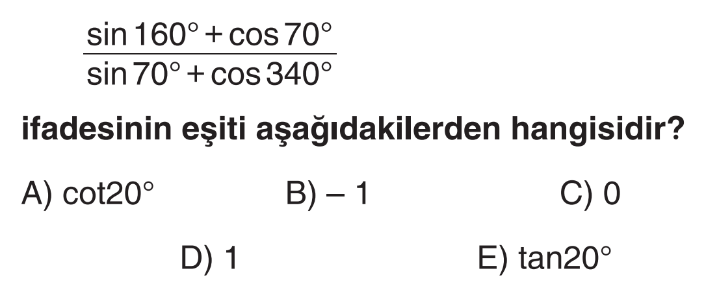
Çözüm
- $\sin160^\circ = \sin20^\circ$, $\cos70^\circ = \sin20^\circ$ → pay $2\sin20^\circ$.
- $\sin70^\circ = \cos20^\circ$, $\cos340^\circ = \cos20^\circ$ → payda $2\cos20^\circ$.
- $\frac{2\sin20^\circ}{2\cos20^\circ} = \tan20^\circ$.
Cevap: E
Soru 18Cevap: A
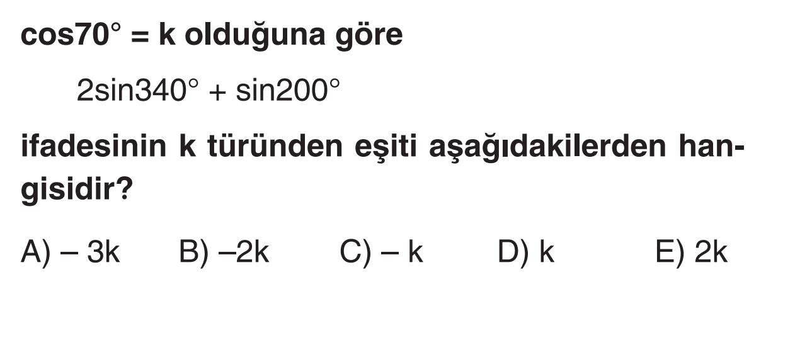
Çözüm
- $\cos70^\circ = \sin20^\circ = k$.
- $\sin340^\circ = -\sin20^\circ = -k$, $\sin200^\circ = -\sin20^\circ = -k$.
- $2(-k) + (-k) = -3k$.
Cevap: A
Soru 19Cevap: C
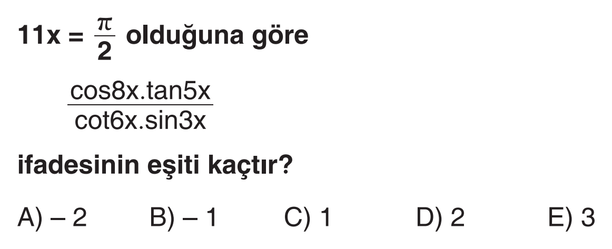
Çözüm
- $11x = \frac{\pi}{2}$ → $8x + 3x = \frac{\pi}{2}$ ve $5x + 6x = \frac{\pi}{2}$ (tümler açılar).
- $\cos8x = \sin3x$, $\tan5x = \cot6x$.
- $\frac{\sin3x\cdot\cot6x}{\cot6x\cdot\sin3x} = 1$.
Cevap: C
Soru 20Cevap: C
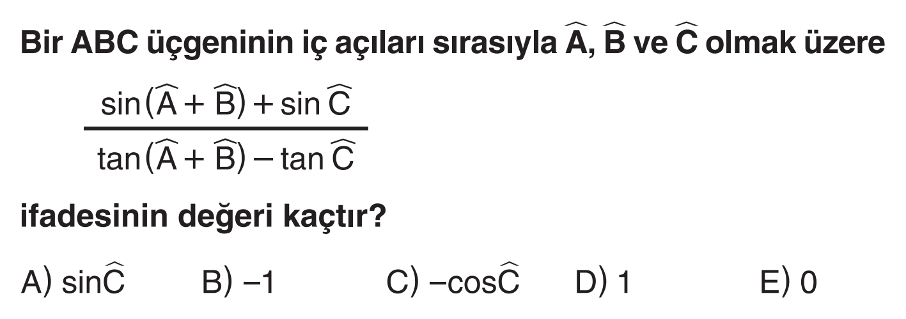
Çözüm
- Üçgende $A + B = 180^\circ - C$.
- $\sin(A+B) = \sin C$, $\tan(A+B) = -\tan C$.
- $\frac{2\sin C}{-2\tan C} = -\cos C$.
Cevap: C
Soru 21Cevap: B
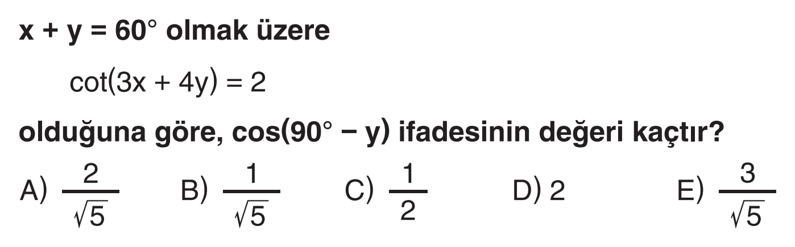
Çözüm
- $3x + 4y = 3(x + y) + y = 180^\circ + y$ → $\cot(180^\circ + y) = \cot y = 2$.
- $\cot y = 2$ ise kenarları $2$ ve $1$, hipotenüsü $\sqrt5$ olan dik üçgende $\sin y = \frac{1}{\sqrt5}$.
- $\cos(90^\circ - y) = \sin y = \frac{1}{\sqrt5}$.
Cevap: B
Soru 22Cevap: D
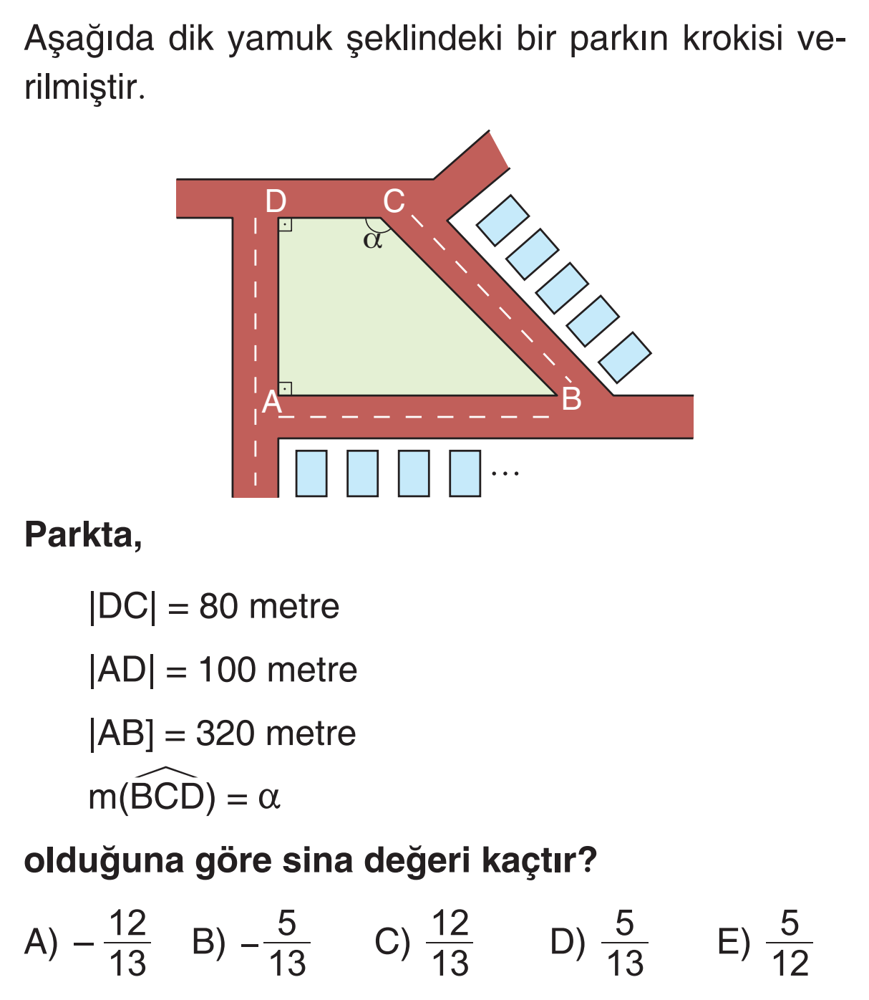
Çözüm
- C'den [AB]'ye dikme: yükseklik $|AD| = 100$, yatay fark $320 - 80 = 240$.
- $|BC| = \sqrt{100^2 + 240^2} = 260$.
- $\alpha$ geniş açı ve bütünleri olan dar açının sinüsü $\frac{100}{260}$ → $\sin\alpha = \frac{5}{13}$.
Cevap: D
Soru 23Cevap: C
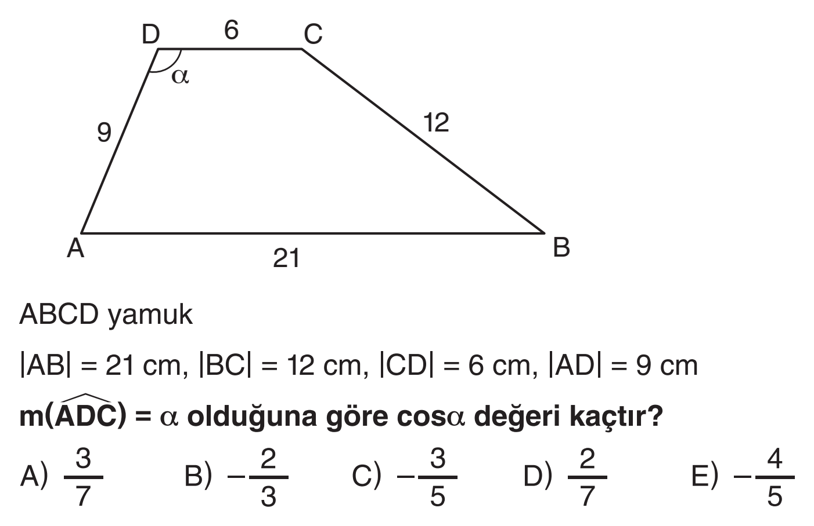
Çözüm
- D ve C'den [AB]'ye dikmeler: yatay parçalar $p + q = 21 - 6 = 15$ ve $9^2 - p^2 = 12^2 - q^2$.
- $q^2 - p^2 = 63$ → $q - p = 4{,}2$ → $p = 5{,}4$; $\cos\hat A = \frac{5{,}4}{9} = \frac35$.
- $\alpha = 180^\circ - \hat A$ → $\cos\alpha = -\frac35$.
Cevap: C
Soru 24Cevap: E
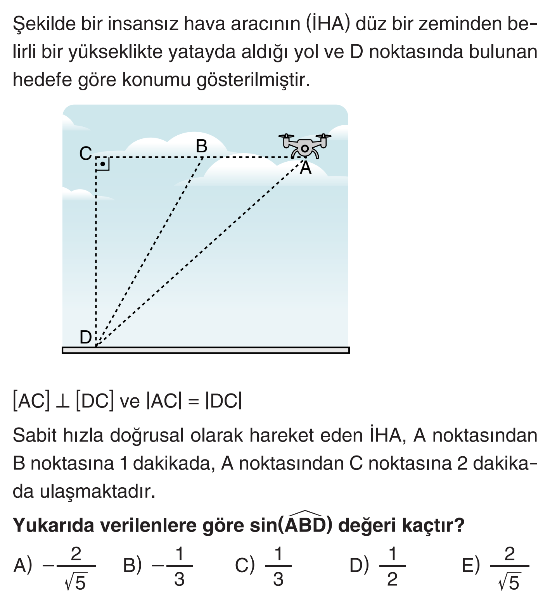
Çözüm
- Hız sabit; $A\to B$ 1 dk, $A \to C$ 2 dk → B, [AC]'nin orta noktası. $|DC| = |AC| = 2$, $|CB| = 1$ alalım.
- DCB dik üçgeninde $|DB| = \sqrt{4+1} = \sqrt5$, $\sin(\widehat{DBC}) = \frac{2}{\sqrt5}$.
- $\widehat{ABD} = 180^\circ - \widehat{DBC}$ → $\sin(\widehat{ABD}) = \frac{2}{\sqrt5}$.
Cevap: E